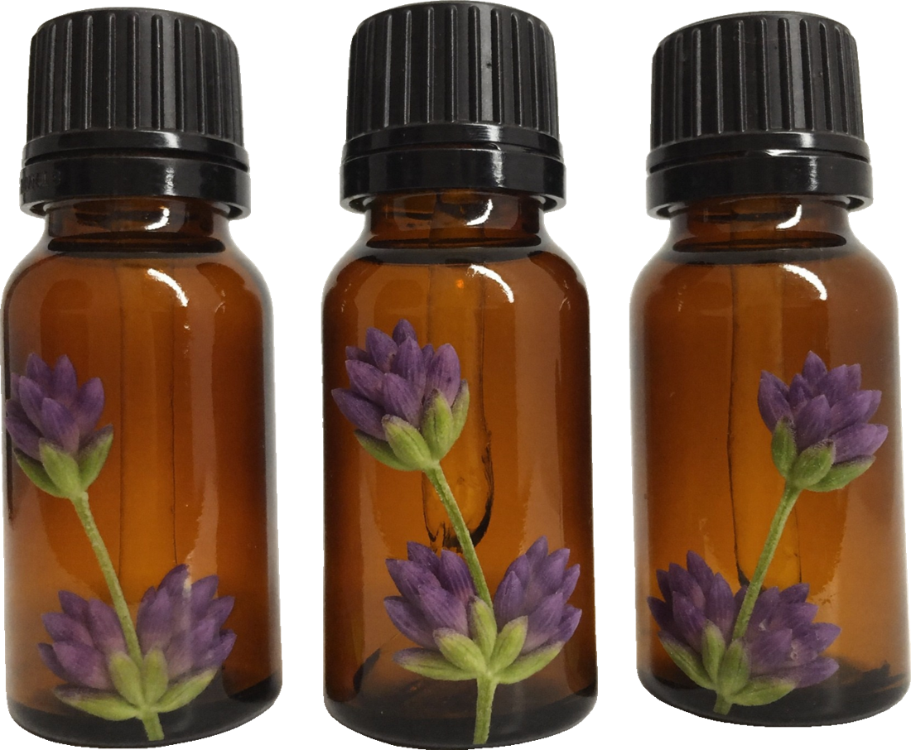

Menopausia Equilibrada · Bono 6Aromaterapia
respira hondo
Tu calma también es salud
Elige un aroma, un momento y una pausa. Y si quieres ver cómo te va, anótalo cada día en la app.


Fuentes
consultadas en octubre de 2026Karimi L. et al. Aromatherapy for the Management of Menopause Symptoms: An Updated Systematic Review and Meta-analysis. Journal of Caring Sciences, 2025. jcs.tbzmed.ac.ir/FullHtml/jcs-33474
Roozbeh N. et al. Effect of Lavender on Sleep, Sexual Desire, Vasomotor, Psychological and Physical Symptom among Menopausal and Elderly Women: A Systematic Review. J Menopausal Med, 2019. synapse.koreamed.org/articles/1130971
Khadivzadeh T. et al. Aromatherapy for Sexual Problems in Menopausal Women: A Systematic Review and Meta-analysis. J Menopausal Med, 2018. synapse.koreamed.org/articles/1092813
The Menopause Society. 2023 Nonhormone Therapy Position Statement (resumen en Breastcancer.org, 28 jun. 2023). breastcancer.org/research-news/non-hormone-therapy-hot-flashes
National Cancer Institute (NCI). Aromatherapy With Essential Oils (PDQ®), versión para pacientes. 11 sep. 2023. ncbi.nlm.nih.gov/books/NBK65820
Universidad de Minnesota. Taking Charge of Your Wellbeing: Are Essential Oils Safe? Consultado oct. 2026. takingcharge.csh.umn.edu/node/182
NCCIH (NIH). Chamomile. Actualizado nov. 2024. nccih.nih.gov/health/chamomile
ASPCA. Latest Home Trend Harmful to Your Pets? What You Need to Know. 17 ene. 2018. aspca.org/news
Asthma and Allergy Foundation of America. Asthma: Are Essential Oils Harmful or Helpful? 28 mar. 2017. community.aafa.org/blog
Este bono es un complemento de bienestar. No diagnostica ni trata enfermedades y no sustituye la consulta con tu profesional de salud. Imágenes generadas con IA con fines ilustrativos.
Bono 6 · Aromaterapia07